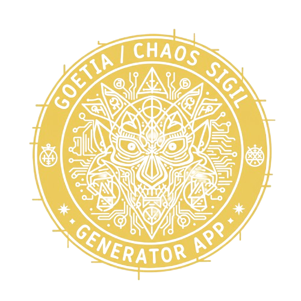
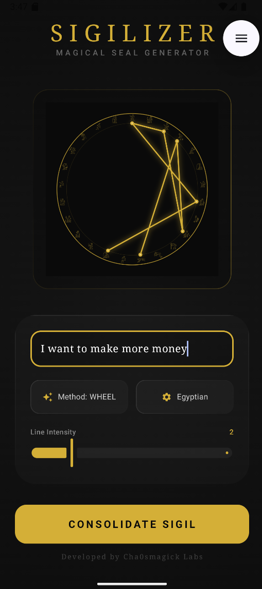
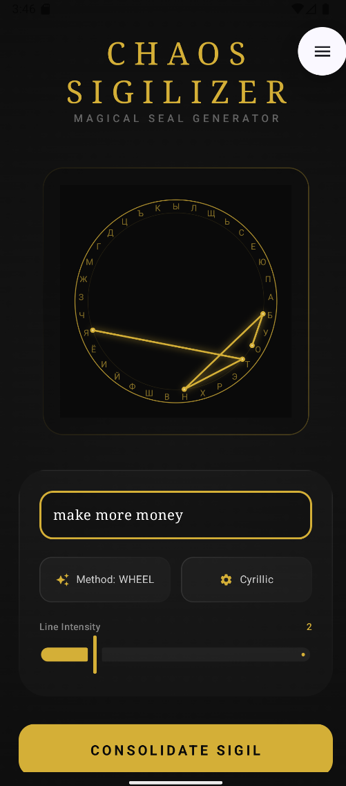
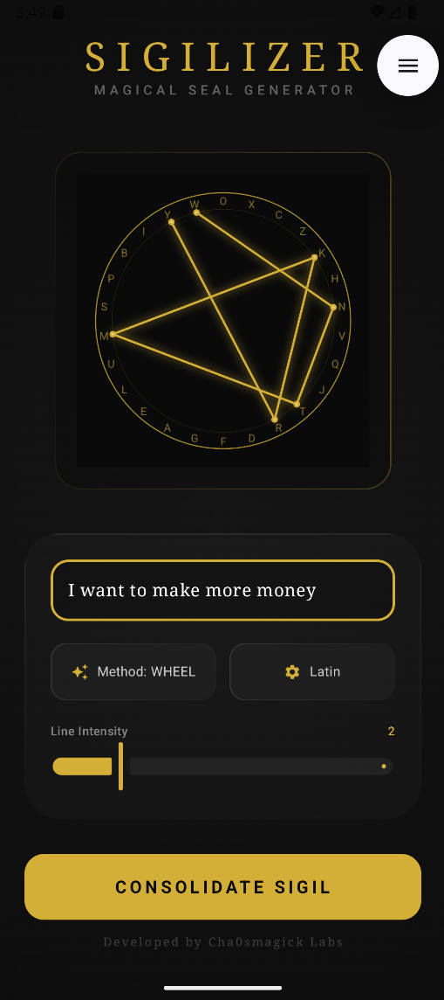

Magick Chaos Sigil Generator
Encode your Will into unique cryptographic sigils using ancient alphabets and planetary magic squares.



What Is Magick Chaos Sigil Generator? The Ultimate Digital Sigil Engine
The Magick Chaos Sigil Generator (also known as Chaos Sigilizer) is the most advanced digital sigil engine ever created — a cybernetic ritual tool that fuses the esoteric techniques of Austin Osman Spare with cryptographic entropy and ancient occult alphabets. Every sigil is a unique mathematical anomaly, a one-of-a-kind manifestation of your Will that can never be replicated.
Key Features for the Modern Occultist
- Advanced Sigil Creation: Transform any intention into a visual sigil using multiple tracing methods including Wheel and Mantra styles. The algorithm handles geometry so you can focus on intent.
- 6 Ancient Occult Alphabets: Infuse your sigils with historical power — Runic (Futhark), Egyptian Hieroglyphs, Hebrew, Arabic, Greek, and Cyrillic. Each alphabet carries its own vibrational signature.
- Planetary Kameas (Magic Squares): Structure your sigil within the astrological power of Saturn, Jupiter, Mars, Sun, Venus, Mercury, or the Moon to align with specific cosmic forces.
- Cryptographic Entropy Engine: True randomization based on your input ensures every sigil is a unique chaotic creation — perfect for cybermancy and chaos magick.
- Visual Flash Ritual: Seal your sigil with a one-click gnostic burst and save it directly to your gallery. The ritual is complete.
- Ritual Environment UI: Celestial Gold vectors on Deep Obsidian background — a focused, minimal interface designed to hold gnosis without distraction.
Who Is This For?
- Chaos Magicians practicing sigilization, cybermancy, and thought-form creation.
- Witches & Occultists who want to combine traditional alphabets with modern cryptographic power.
- Technomancers who see the screen as a portal and code as a spell.
Technical Specifications
- Cryptographic entropy sigil generation engine
- 6 ancient alphabets + 7 planetary Kameas
- Multiple tracing methods (Wheel, Mantra, etc.)
- Visual flash ritual for gnostic charging
- 5 languages: EN, ES, DE, IT, FR
- Fully offline — all processing on-device
- Zero trackers, zero ads
- Android 6.0+ | One-time purchase — $3.99 USD
Frequently Asked Questions
How is the sigil generated?
You write your intention. The app uses cryptographic entropy derived from your text to create a unique geometric seal. Every sigil is mathematically one-of-a-kind.
Can I use traditional occult alphabets?
Yes. The app supports Runic, Egyptian Hieroglyphs, Hebrew, Arabic, Greek, and Cyrillic scripts, each adding its own layer of symbolic power.
What are Planetary Kameas?
They are magic squares associated with the seven classical planets. Integrating them aligns your sigil with specific astrological energies.
Is this suitable for beginners?
Absolutely. While the technology is advanced, the interface is intuitive. Tutorials are included in multiple languages.
One-Time Purchase. Lifetime Access.
Download the Magick Chaos Sigil Generator now for a single payment of $3.99 USD. No subscriptions, no in-app purchases. Encode your Will into reality today.
Compression Is the Easy Part
A sigil generator takes a sentence you wrote and produces a compact mark for it in under a second. That is a real operation and it is the least interesting part of the practice. It replaces twenty minutes of clerical drawing, which is genuine, and it replaces nothing else, which is the part people tend to skip. The aim, the reduction choices, the hour after the drawing, and the fortnight that follows are what make a sigil work, and none of those happen because a button was pressed.
What the algorithm is actually doing
Letter reduction is a compression scheme applied to language: remove the letters that carry no intent, then take the remaining skeleton and map it onto a fixed visual vocabulary of circles, lines and crossings. How to make a sigil is the method, and the origins of the practice is where it came from. Nothing in that pipeline is proprietary, and another implementation will produce a different mark for the same sentence, which is the proof that the algorithm is not the sigil.
That proof matters for a reason that is easy to state and easy to forget: if two different algorithms give two different glyphs for one aim, the glyph is not what carries the aim. Choosing a reduction family is the version of this that is actually useful, because the choice of family is a choice about legibility and about how much of the sentence survives.
The twenty minutes you do not actually save
The claim that a generator removes the work is where the practice gets weaker, because the twenty minutes were never clerical. They were the interval in which you decided what the sentence should say, where the redundancy went, and which words were load-bearing. Press a button and that interval disappears, along with the only part of the twenty minutes that was doing anything.
So the honest use of a generator is backwards from the obvious one: use it to produce several candidates and then choose which reduction you actually wanted, rather than using it to produce one. The full theory and practice is the long version of that argument, and the design and charge sequence is what the twenty minutes are for.
The charge is what survives
Everything that makes a sigil practice rather than a graphic is in the hour after the drawing: the attention held flat, the association made once and not rehearsed, the willingness to leave it alone. Programming the subconscious, described plainly covers the mechanism that is usually invoked and the evidence for it, and the charge step specifically is the instruction.
The accelerated variants are worth reading as a stress test. What survives is the drawing, the association and the forgetting. What does not survive is the compression, and the claim that the compression is where the power is.
Where a generated sigil fails and a drawn one does not
The failure mode of the generated version is that the glyph is not yours, and you can tell. A hand-drawn reduction carries the wobble of the hand, and the wobble is a memory of the moment of deciding. A generated one does not, which is not a defect in the mark but a loss in the object. People report finding generated sigils harder to hold in mind, and that is consistent with the forgetting step doing its work on a mark that was never fully yours.
For the same reason, the specification-style approach works well with generators and badly with hand-drawing, because a specification is a text and a text wants a machine. Different instruments, different jobs. A working example shows the sequence end to end with the drawing done by hand, and another shows the same structure in a different domain.
The tradition you are borrowing from
Sigilisation is a twentieth-century formalisation, and the tradition it sits in argued about it. The fundamentals sets out the founding position, and the structure of the claim is the version worth reading before you decide how much weight to put on it. The four-question audit is the practical instrument here, and that audit in full is the one to use before you charge anything with a large claim attached.
The phrase inner power is the one the marketing leans on hardest and it is worth reading precisely because the claim is vague in a way that is hard to falsify. A more recent treatment of the same ground and an earlier one bracket the range of positions the movement has held.
A sequence that uses the tool well
The version that holds together: write the aim as an imperative sentence a bank would recognise; reduce it by hand once, slowly; run the generator to see two alternatives and reject both; draw the one you meant, badly; charge it once; then leave it for a fortnight. That sequence takes twenty-five minutes and the twenty minutes are the practice.
The older and newer treatments of the basics and the one aimed at people starting out both arrive at the same emphasis from different directions, and the version on choosing a reduction family is the one that most improves a generated mark. If you take one thing from the tool, take that.
The parts of the page worth reading as instructions
The output is a picture, so the only thing to read on it is the statement you typed. Keep that statement in front of you while the glyph is being built, because the generator will not tell you what it dropped. A reduction that collapses a preposition into a line and a negation into nothing can be correct and still be unreadable a fortnight later. The spell is not the image; it is the sentence, and the image is a handle you put on the sentence. The distinction is the whole reason the technique has a charge step at all, and it is spelled out in How to make a sigil from first principles, where the same letter-reduction rules are walked through by hand so you can see which letters survive. Read that page once and the generator stops being a novelty.
Before you generate anything, decide the office in a single sentence and write it down. An office is what the thoughtform is for, and it is the field that can be checked later; everything else about a sigil is either convention or taste. The pages on designing a sigil and charging it and on what a sigil claim survives both come back to that same point from different directions. If you take one habit from a tool that does nothing else for you, take the habit of naming the office first.
Two questions to ask before the first charge
Ask whether the statement is specific enough to fail, and whether you would still write it in three months. A wish cannot fail; a command can. Unifying the theory sets out why the imperative mood is the load-bearing part of a sigil rather than the shape, and what a claim audit looks like gives the four questions that keep a working from drifting into something you cannot check. A page on a four-question test for power claims covers the same ground from the other direction, and the basic terms is the shortest definition of charge, office and aim you will find in one place.
Then ask what the forgetting stage is doing, because that is the step the tool cannot help with at all. The method and the gap inside it are described in a sigil design, charge and forget guide and in the complete theory and practice of sigil magic, which is worth reading before the second working rather than before the first.
The library behind a mark you did not draw
A generated glyph is a compression result, and compression only means something once the sentence going into it was yours. The writing below is what makes the aim legible before the algorithm touches it, which is the part the button cannot do for you. Sigils: Theory and Technique Sigil Theory and Technique: From Statement to Mark Sigils: Theory and Technique Chaos Magic Fundamentals Chaos Magic Fundamentals Chaos Magic Fundamentals Chaos Magic Fundamentals Chaos Magic Fundamentals Chaos Magic Fundamentals.
None of these replaces the others. Read the one that answers the question you actually arrived with, and leave the rest for the next time you find yourself back at this page without a question.
A generator is a good first draft tool and a poor final one. The twenty minutes it appears to save are the twenty minutes that were doing the work, and the mark it hands you is not the mark that was yours.
Thirty entries from the library
- chaos-basics
-
Chaos Magic Fundamentals for Someone Starting Today — What chaos magic actually contributes, what you need to begin, and why belief is optional in the tradition's own standard position.
Supernatural Powers: What the List Is Actually Made Of — The powers lists in this genre are not one thing. Sorted honestly they are trainable capacities, ordinary social effects, untested claims, and statements that…
TRANSFORMARTE — A complete working guide to TRANSFORMARTE: what it is, the chaos magic fundamentals structure behind it, and the full protocol. Includes step-by-step...
Chaos Magic Fundamentals — A complete working guide to chaos magic fundamentals covering chaos magic fundamentals. Includes step-by-step protocol, honest failure modes, and FAQ.
Chaos Magic Fundamentals — A complete working guide to chaos magic fundamentals covering chaos magic fundamentals. Includes step-by-step protocol, honest failure modes, and FAQ.
Chaos Magic Fundamentals — A complete working guide to chaos magic fundamentals covering chaos magic fundamentals. Includes step-by-step protocol, honest failure modes, and FAQ.
Chaos Magic Fundamentals — Field notes from teaching the entry points more times than is sensible: where the movement started, what the fundamentals actually teach, and the three failure…
Chaos Magic Fundamentals — Where chaos magic came from, the two texts that founded it, the method that makes it distinctive, and the terms and tables you will meet in your first month.
Chaos Magic Fundamentals — What the chaos magic founding texts actually claim, the evidence-based counterargument stated properly, where the practice has been intellectually honest, and…
Chaos Magic Fundamentals — A complete working guide to chaos magic fundamentals covering chaos magic fundamentals. Includes step-by-step protocol, honest failure modes, and FAQ.
Chaos Magic Fundamentals — The fundamentals of chaos magic, worked through three delusions that keep beginners stuck: that you need initiation, that you need a system, and that you need…
Chaos Magic Fundamentals — A complete working guide to chaos magic fundamentals covering chaos magic fundamentals. Includes step-by-step protocol, honest failure modes, and FAQ.
Chaos Magic Fundamentals — A complete working guide to chaos magic fundamentals covering chaos magic fundamentals. Includes step-by-step protocol, honest failure modes, and FAQ.
Chaos Magic Fundamentals — A complete working guide to chaos magic fundamentals covering chaos magic fundamentals. Includes step-by-step protocol, honest failure modes, and FAQ.
Chaos Magic Fundamentals — A complete working guide to chaos magic fundamentals covering chaos magic fundamentals. Includes step-by-step protocol, honest failure modes, and FAQ.
Chaos Magic Fundamentals — A complete working guide to chaos magic fundamentals covering chaos magic fundamentals. Includes step-by-step protocol, honest failure modes, and FAQ.
Chaos Magic Fundamentals — A complete working guide to chaos magic fundamentals covering chaos magic fundamentals. Includes step-by-step protocol, honest failure modes, and FAQ.
Chaos Magic Fundamentals — A complete working guide to chaos magic fundamentals covering chaos magic fundamentals. Includes step-by-step protocol, honest failure modes, and FAQ.
Chaos Magic Fundamentals — A complete working guide to chaos magic fundamentals covering chaos magic fundamentals. Includes step-by-step protocol, honest failure modes, and FAQ.
Chaos Magic Fundamentals — A complete working guide to chaos magic fundamentals covering chaos magic fundamentals. Includes step-by-step protocol, honest failure modes, and FAQ.
Inner Power in Chaos Magick: What the Phrase Actually — Inner power is the most over-claimed phrase in modern occult marketing. Here is a reference breakdown of the four different things it can mean, which versions…
- sigils
-
Sigils: Theory and Technique — A complete working guide to sigils: theory and technique covering sigils: theory and technique. Includes step-by-step protocol, honest failure modes, and FAQ.
Sigils: Theory and Technique — A complete working guide to sigils: theory and technique covering sigils: theory and technique. Includes step-by-step protocol, honest failure modes, and FAQ.
Sigils: Theory and Technique — Letter reduction step by step, the geometry that recurs across sources, why encoding and charging are separate operations, and what a digital generator can and…
Hyper-Accelerated Sigils: What the Claim Survives in Practice — The acceleration claim comes from Spare's late sigil work. Here is which part of it holds up under a real test, which part is an artefact of compressing the…
Sigil Theory and Technique: From Statement to Mark — Letter reduction, the shape language of sigils, two-stage working, and what a derivative is for. The complete beginner route from statement to charged mark.
Sigils: Theory and Technique — A complete working guide to sigils: theory and technique covering sigils: theory and technique. Includes step-by-step protocol, honest failure modes, and FAQ.
Sigil Craft: A Framework for Choosing a Reduction Family — Four sigil traditions are in circulation and they optimise for different things. A framework for picking the one that fits the work, and the cost you accept when…
Sigilkore — A complete working guide to Sigilkore: what it is, the sigils: theory and technique structure behind it, and the full protocol. Includes step-by-step...
Sigil Subconscious Programming: How Glyphs Encode Intent
Design, Charge, Forget: The Complete Chaos Sigil Workflow (2026)
Sigil Magic: Complete Theory and Practice for Chaos Magick
Sigil Magic Meaning & Origins: Chaos Magick Explained (2026)
- fame
-
A Sigil for Followers: Why Reach Is the Wrong — A sigil aimed at follower count underperforms a sigil aimed at one conversion. Here is how to derive a visual system, charge it, and point it at the output that…
- beauty
-
Bonita and the Beauty Sigil: A Ritual That Has — What a beauty sigil can plausibly affect, why grooming consistency outranks intensity, and the mirror-checking trap that makes appearance practice backfire.
- servitor-craft
-
The Servitor Revolution Was About Writing, Not Power — The revolution in magickal servitors is not that they got more powerful. It is that writing a specification with a refusal clause became something one person…